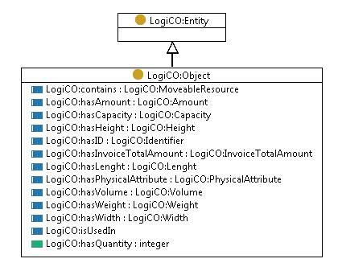

http://ontology.tno.nl/logico#Object
Class LogiCO:Object

rdf:type
owl:Class
rdfs:comment
Any physical, social, or mental object, or a substance Equivalent to the concept of Object in DOLCE UltraLite (DUL) ontology.
rdfs:isDefinedBy
http://www.ontologydesignpatterns.org/ont/dul/DUL.owl
rdfs:subClassOf
LogiCO:Entity
References
as rdfs:domain (
LogiCO:hasQuantity
,
LogiCO:hasID
,
LogiCO:isUsedIn
,
LogiCO:hasPhysicalAttribute
,
LogiCO:contains
,
LogiCO:has amount
)
as rdfs:subClassOf (
LogiCO:Document
,
LogiCO:PhysicalResource
,
LogiCO:Parameter
,
LogiCO:Address
,
LogiCO:Identifier
,
LogiCO:Actor
,
LogiCO:Location
,
LogiCO:Requirement
)
Generated with
TopBraid Composer
by
TopQuadrant, Inc.